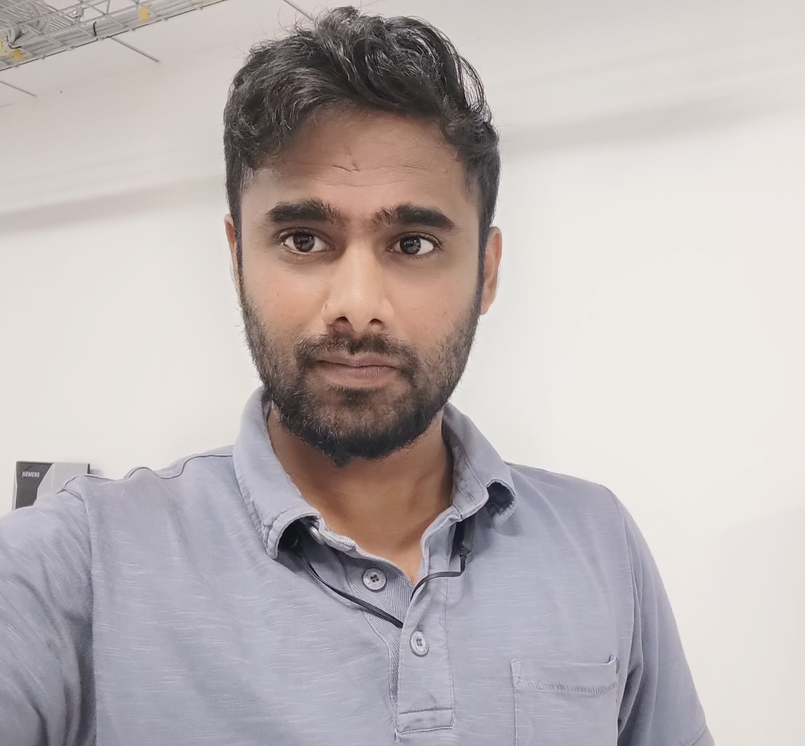

Vijay G

Sofware Test Engineer
gvijay370@gmail.com
9972714223
Github
LinkedIn
Summary
Dedicated and highly motivated software professional with a strong background in software testing andquality assurance, seeking a challenging opportunity to transition into a software developer role. Eager to leverage my testing expertise and technical acumen to contribute to the design, development, andimplementation of innovative software solutions.
Education
Bachelor
of
Engineering,
Electronics
and
Communication (2015-2019)
- RV college of Engineering - 7.74 CGPA
Work Experience
Sofware Test Specialist
Siemens
04/2022 – present | Bengaluru, India
- End to End Testing of EV charging station ecosystem which includes embedded hardware and cloud-based application
- Functional testing of charging stations and it’s Communication with Charge station management system.
- Test Automation Using Keyword Based Automation Framework Robot and Python Libraries.
- Working on Automation of “Over The Air" Firmware update of charging station and Commissioning of the charging unit.
- Developing automated TCs and their execution.
- Producing test reports.
- Maintenance of test cases.
- Regression Testing and Defect Management.
Test Engineer
Wipro
03/2021 – 04/2022 | Bengaluru, India
- Worked on HMI validation for Daimler trucks & buses and FUSO trucks.
- Responsibilities handled: Sanity testing, Confirmation testing, Regression testing, CAPL script writing, Test cases Design, Implementation, Reviewing and Execution and Defect Management.
- Worked on Automation Test CAPL scripts generation tool and Traceability tracking tool.
- Fully automated nearly 1000 Test cases in a very less duration of 2.5 Months.
Test Engineer
KPIT
07/2019 – 11/2020 | Bengaluru, India
- Mainly involved in Functional Testing of Instrument Cluster through Vector Canoe using Manual black box testing techniques.
- Full Automated HIL Testing with dSPACE Simulation which specifically designed for testing Automotive ECUs.
- Reviewed feature requirements, design documents and prepared test cases for all module requirements.
- Worked in Verification and Validation Team of 20 Engineers. Collaborated with Experts to understand requirements.
- Worked within Agile methodology.
Skills
- Python ⭐ ⭐ ⭐ ⭐ ⭐
- Test Automation ⭐ ⭐ ⭐ ⭐
- Software Development Lifecycle (SDLC) ⭐ ⭐ ⭐ ⭐ ⭐
- Problem-solving and debugging skills ⭐ ⭐ ⭐ ⭐ ⭐
- Functional Testing ⭐ ⭐ ⭐ ⭐ ⭐
- Defect Management ⭐ ⭐ ⭐ ⭐ ⭐
- Version Control : Git ⭐ ⭐ ⭐ ⭐
- Tools & Distribution ⭐ ⭐ ⭐ ⭐
- PyCharm, Anaconda, Jupyter Notebook
Projects
Lane Departure Warning System.
- LDW System for Autonomous vehicle, The module was build using Raspberry Pi and Image processing technology using OpenCV library in python programming language.
- The main focus of the project was to build a system which is capable of detecting the unclear lines and able to perform in non-friendly climatic conditions to help the driver for better safety.
- The scope of the project was extended by integrating LDW system with smart head light system to give drivers a better visibility at night.
- The above idea was presented as Technical paper in 4th IEEE RTEICT-2019 conference held at SVCE Bangalore.
Dog Breed Identification.
- A Data Science project which predicts the dog's breed by taking dog's photo as input.
- Programming language, libraries & Modules used : Python, Numpy, pandas, Matplotlib and tensorflow.
- Accuracy achieved : 91%
Certificates
- ISTQB Foundation Level
- Data Analysis with Python
- API Testing
- Cloud Test Practitioner
- Python Programming Advanced